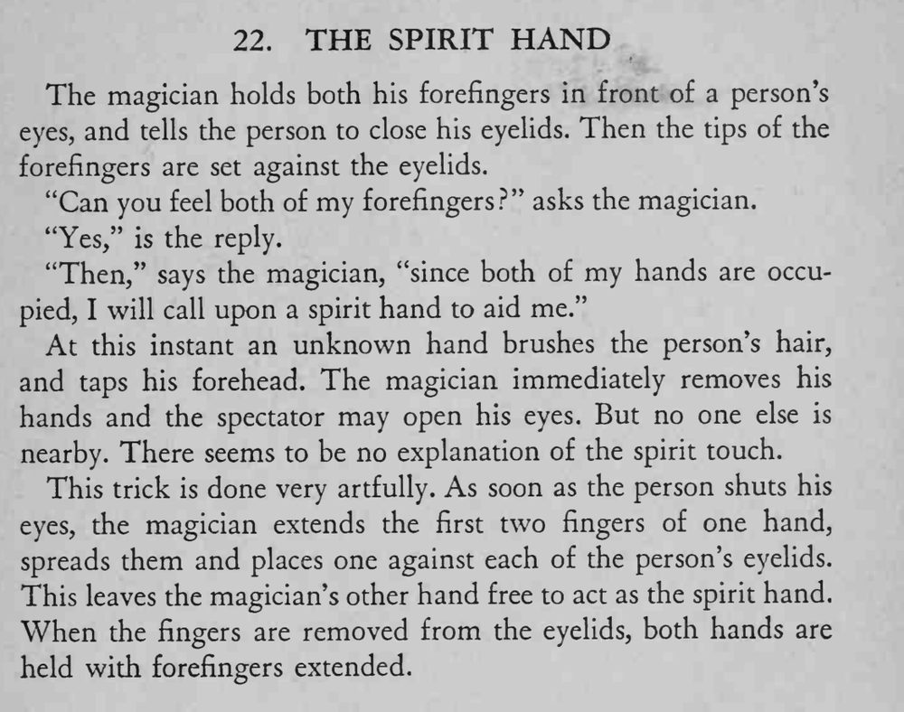

观众闭着眼，感觉魔术师两根食指按在眼皮上；就在这时，一只看不见的手抚过他的头发、敲了敲他的额头，而魔术师的手分明都还在他眼皮上。
必须让观众始终感到两片眼皮上各有一根手指，换手那一瞬要非常轻。

The magician holds both his forefingers in front of a person's eyes, and tells the person to close his eyelids. Then the tips of the forefingers are set against the eyelids. "Can you feel both of my forefingers?" asks the magician. "Yes," is the reply. "Then," says the magician, "since both of my hands are occupied, I will call upon a spirit hand to aid me." At this instant an unknown hand brushes the person's hair, and taps his forehead. The magician immediately removes his hands and the spectator may open his eyes. But no one else is nearby. There seems to be no explanation of the spirit touch. This trick is done very artfully. As soon as the person shuts his eyes, the magician extends the first two fingers of one hand, spreads them and places one against each of the person's eyelids. This leaves the magician's other hand free to act as the spirit hand. When the fingers are removed from the eyelids, both hands are held with forefingers extended.